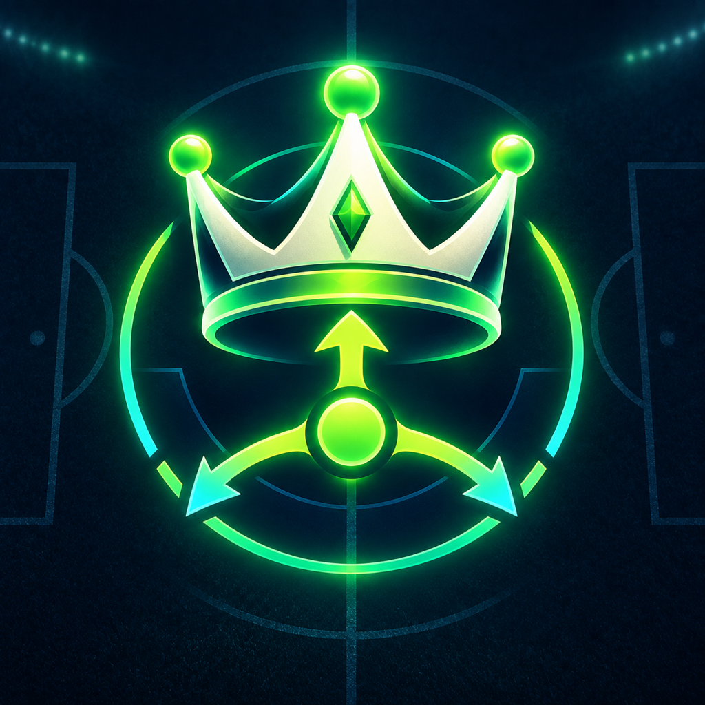

Soccer / football / futbol decision training
Train the brain before the moment arrives.
Three focused games for passing vision, shoulder-check awareness,
and through-ball timing. Useful reps for players. Clear tools for
coaches.

PASS · SCAN · CREATE
The training ground
Three decisions that shape a match.
Each session is short enough to repeat and specific enough to make
the next rep matter.
◎01
Pass To Goal
See the lane.
A crowded pitch becomes a chain of choices. Move through safe
passing lanes, recognize when the picture changes, create the
final angle, and finish without giving the ball away.
Passing-lane visionSequence planningRisk and reward
Why it helpsBuilds the habit of looking beyond
the first available pass and planning the next action before
committing to this one.
◉02
Check Shoulder
Scan before the touch.
Scan the space around the receiver, hold the pressure picture in
memory, then choose the turn or escape that keeps the next play
alive. Dynamic scenarios keep the repetitions unpredictable.
Pre-scan awarenessWorking memoryFast decisions
Why it helpsTrains a faster mental picture before
receiving, so awareness becomes part of the first touch instead
of a reaction after it.
→03
Through Ball
Time the space.
Read the defensive line, spot the runner at the right instant,
avoid the offside trap, and place the ball into useful space—not
simply at the player’s feet.
Run recognitionOffside timingPass weight and angle
Why it helpsConnects timing, direction, and pass
weight so the brain learns to see the run and the open space as
one decision.
Solo by default
Your training stays yours.
Solo sessions work offline. Preferences and results stay on your
device. There is no account, analytics profile, advertising
identifier, or public feed.
See exactly what the app stores →
Private by designNo developer backend or tracking SDK.
Nearby when invitedDirect iPhone sessions on your local
network.
Built for repetitionImmediate feedback and on-device
progress history.

Lifetime unlock
One purchase. No subscription.
Premium Lifetime
Train together. Pay once.
Put the same football-IQ challenge in every teammate’s hands and
find out who sees the play first. Nearby Match synchronizes the round
across 2–8 iPhones, then turns every decision into friendly
competition with live scores, standings, ties, and playoffs.
It is a quick, fun way for teammates, friends, siblings, or a whole
coaching group to compare ideas, talk through different choices, and
train the brain together—without accounts or an internet service.
- Same scenario, different decisions
- Live round scores and shared standings
- All three games plus deeper solo controls
One lifetime purchase · No subscription · iPhone